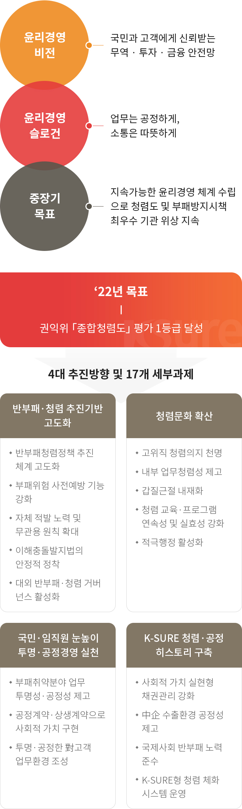
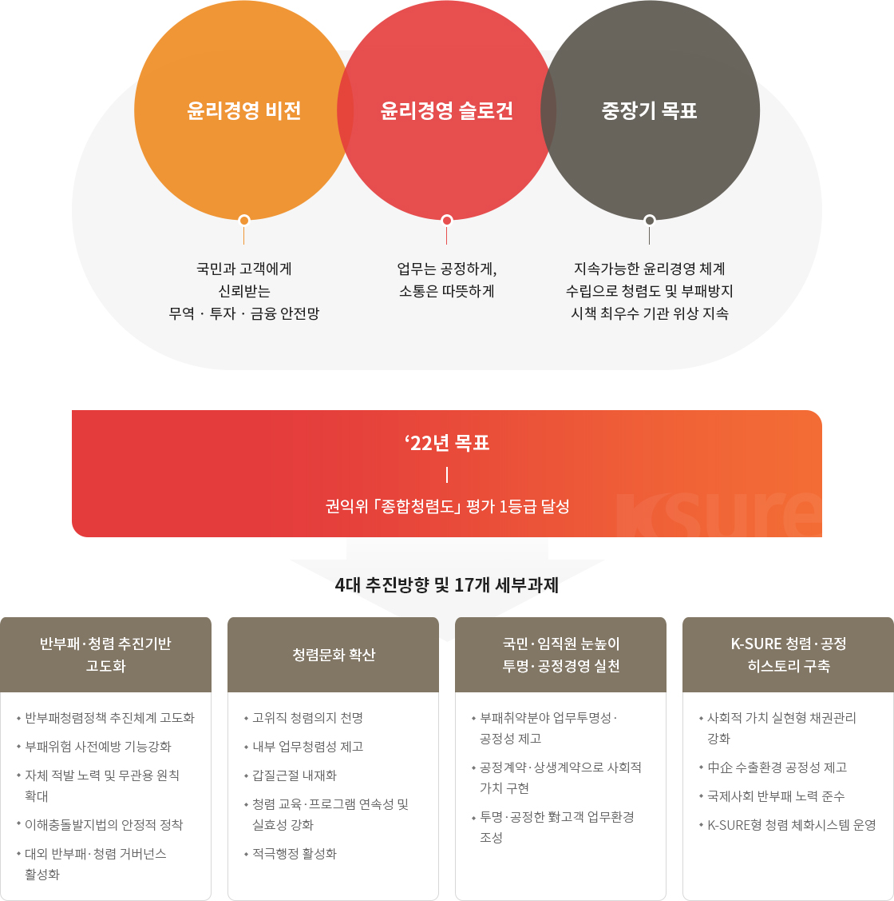

윤리경영추진전략
반부패·청렴계획 추진방향 및 세부과제


- 윤리경영 비전
- 국민과 고객에게 신뢰받는 무역 · 투자 · 금융 안전망
- 윤리경영 슬로건
- 업무는 공정하게, 소통은 따뜻하게
- 중장기 목표
- 지속가능한 윤리경영 체계 수립으로 청렴도 및 부패방지시책 최우수 기관 위상 지속
‘22년 목표 - 권익위 「종합청렴도」 평가 1등급 달성
4대 추진방향 및 17개 세부과제
- 반부패·청렴 추진기반 고도화
- 반부패청렴정책 추진체계 고도화
- 부패위험 사전예방 기능강화
- 자체 적발 노력 및 무관용 원칙 확대
- 이해충돌발지법의 안정적 정착
- 대외 반부패·청렴 거버넌스 활성화
- 청렴문화 확산
- 고위직 청렴의지 천명
- 내부 업무청렴성 제고
- 갑질근절 내재화
- 청렴 교육·프로그램 연속성 및 실효성 강화
- 적극행정 활성화
- 국민·임직원 눈높이 투명·공정경영 실천
- 부패취약분야 업무투명성·공정성 제고
- 공정계약·상생계약으로 사회적 가치 구현
- 투명·공정한 對고객 업무환경 조성
- K-SURE 청렴·공정 히스토리 구축
- 사회적 가치 실현형 채권관리 강화
- 中企 수출환경 공정성 제고
- 국제사회 반부패 노력 준수
- K-SURE형 청렴 체화시스템 운영